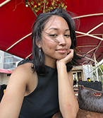
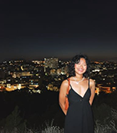

Our Experiences.


Callista
My name is Callista. I'm 21 years old, currently studying Communication and Multimedia Design. I consider myself a creative, and that's one of the reasons I decided to create Our Social Hub. I'm always looking for like-minded people and striving to be kind to both people and our environment. This is where The Social Hub comes in. The Social Hub is a place that emphasizes that our voices matter, where we can discover, connect and grow within our community. It's a community where we empower each other and strive for a better environment, working together to make a positive change in society.
Fun fact: The Social Hub is my second home, I'm there almost every other day.
Jazzmine
Hi, I'm Jazzmine, and I'm 20 years old studying Communications and Multimedia Design. The first time I went to The Social Hub, I instantly fell in love with what they stand for and their sustainability mission. I've always wanted to do volunteering work for our community because I'd call myself having a green thumb. With their social impact goals by 2030, I've been loving to contribute to their community volunteering efforts.
Fun fact: I love my dog Winnie.
Melisa
My name is Melisa, and I am a 20-year-old law student. I stand for the rights of people, and I'm happy to be part of a community that's all in for diversity and inclusion. I'm always looking out for their next panel talks and documentary screenings, raising awareness about women, mental health, Black History Month and refugees, and educating our community.
Fun fact: Cats & books. That's all.
Meet, create, belong @ Our Social Hub